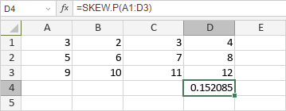

SKEW.P funkcija
SKEW.P funkcija je jedna od statističkih funkcija. Koristi se za vraćanje asimetrije (iskrivljenosti) raspodele na osnovu populacije: karakteristike stepena asimetrije raspodele oko njene srednje vrednosti.
Sintaksa
SKEW.P(number1, [number2], ...)
SKEW.P funkcija ima sledeće argumente:
| Argument | Opis |
|---|---|
| number1/2/n | Do 255 numeričkih vrednosti za koje želite da izračunate asimetriju raspodele. |
Napomene
Ako referentni argument sadrži tekst, logičke vrednosti ili prazne ćelije, funkcija će te vrednosti zanemariti, ali će ćelije sa nultim vrednostima uzeti u obzir.
Kako primeniti SKEW.P funkciju.
Primeri
Slika ispod prikazuje rezultat koji vraća SKEW.P funkcija.
